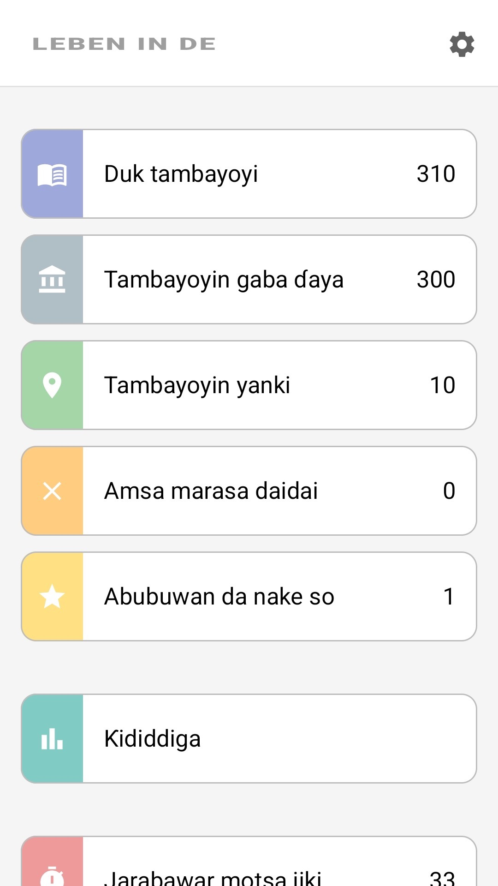
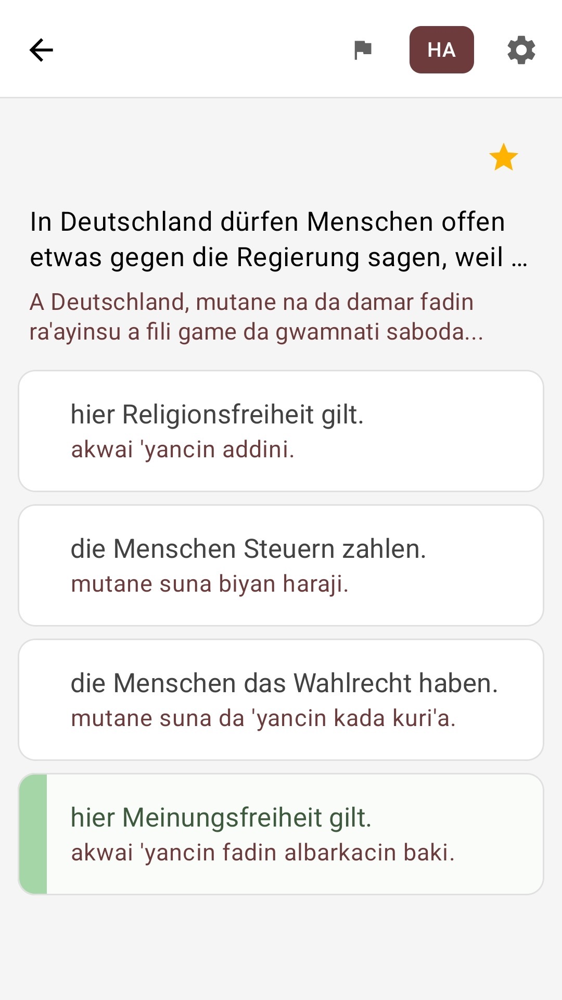

Dukkan tambayoyi 310
Tambayoyi 300 na gama-gari da ƙari tambayoyi 10 don jiharka — cikakken jerin tambayoyin hukuma.
Leben in Deutschland · Einbürgerungstest
Dukkan tambayoyi 310 na hukuma na jarrabawar "Leben in Deutschland", da aka fassara zuwa Hausa. Koya cikin sauƙi, gwargwadon yadda kake so, ba tare da buƙatar intanet ba.

Kyauta · Yana aiki ba tare da intanet ba · Tambayoyi don dukkan jihohi 16

Ana nuna kowace tambaya da Jamusanci — kamar yadda yake a ainihin jarrabawar — tare da fassarar Hausa a ƙasa kai tsaye. Kana koyon abubuwan da kuma ainihin kalmomin da za ka gani a jarrabawar.
Manhajar tana ba da fassarori zuwa harsuna sama da 100 — abin da ya fi muhimmanci shi ne naka ya riga ya kasance a can.
In Deutschland dürfen Menschen offen etwas gegen die Regierung sagen, weil …
A Jamus, an yarda mutane su soki gwamnati a fili saboda …
hier Meinungsfreiheit gilt.
'yancin faɗar albarkacin baki yana aiki a nan.
die Menschen Steuern zahlen.
mutane suna biyan haraji.
Tambaya ta 1 daga cikin 310 · ɓoye fassarar da taɓawa ɗaya
Katunan iri ɗaya kamar na manhaja: masu sauƙi, bayyanannu, babu ƙari.
Tambayoyi 300 na gama-gari da ƙari tambayoyi 10 don jiharka — cikakken jerin tambayoyin hukuma.
Jarrabawar gwaji: tambayoyi 33 da iyakar mintuna 60 — dokoki iri ɗaya kamar na jarrabawar hukuma.
Bayan kowace amsa kana ganin nan take ko daidai ne ko kuskure — koya yayin tafiya.
Yanayi na musamman da tambayoyin da ka amsa ba daidai ba kawai — cike giɓinka cikin inganci.
Yi wa tambayoyin da kake ganin suna da wuya alama kuma ka koma gare su a duk lokacin da kake so.
Yi karatu a cikin jirgin ƙasa, a layi, ko'ina — ba a buƙatar intanet ko kaɗan.
Tsarin yana da Hausa. Ƙira mai natsuwa, mai haske ba tare da ƙari ba.



Daga shigarwa zuwa shirye-shiryen jarrabawa.
Shigar kyauta, zaɓi Hausa da jiharka.
Karanta tambayoyi da fassarori, yi wa masu wuya alama kuma sake duba kurakuranka.
Gwada kanka a yanayin jarrabawa — sannan ka shiga ainihin jarrabawar da kwarin gwiwa.
Kyauta. Da Hausa. Yana aiki ba tare da intanet ba.
Wannan aiki ne na ilimi na sirri, ba manhajar hukuma ta Ofishin Tarayya na Ƙaura da 'Yan Gudun Hijira (BAMF) ba. Manhajar ba ta da alaƙa da kowane hukumomin gwamnati kuma ba ta wakiltar wata cibiya ta hukuma.
Tambayoyin jarrabawar sun dogara ne a kan jerin tambayoyin hukuma na BAMF. An buga ainihin abun cikin da Jamusanci a cikin cibiyar gwajin kan layi ta BAMF.
Fassarorin AI ne ya samar da su don tallafa wa masu amfani da iyakacin sanin Jamusanci kuma na iya ƙunsar kurakurai. Idan ka yi imanin cewa ya kamata a inganta fassara, za ka iya sanar da mai haɓakawa kai tsaye daga manhajar. Kawai ainihin rubutun Jamusanci na tambayoyin ne ke da iko.
Abun cikin wannan manhaja an yi shi ne kawai don shirya jarrabawa. Duk da shirye-shirye a hankali, ba mu ba da tabbacin daidaito, cikawa ko sabuntar bayanan; an cire duk wani alhaki na lalacewar kai tsaye ko a kaikaice da ke tasowa daga amfani da wannan manhaja. Kawai kayan hukuma na BAMF ne ke da iko.